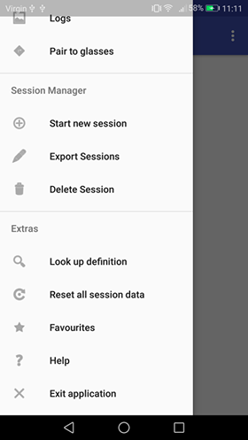

Nadim Edde Gomez
- Team 19 Repository
- Github
How to manage our application
In this final section, we will provide details on how to use our application that you can download here. To download the smartglasses application click here. We will go through the steps required to start using it. We will also provide a manual for connecting the glasses to the phone application. Finally, we will talk about how to use our source code to expand our application.
User manual
If you would like to use the glasses, please follow the steps in the Bluetooth Connection Manual.
Using the main functionality
To start a session, open the sidemenu and navigate to the "Start new session" page.
 Here click on the button "Start New Session".
Here click on the button "Start New Session". Once you are in a session, press the button labelled "Off" to start the recording. It's state will change to "On".
 Now you can start speaking and as you do, the first word will appear. To show the definition of a word, press "Show Definition". to go to the next word press "Next Definition".
Now you can start speaking and as you do, the first word will appear. To show the definition of a word, press "Show Definition". to go to the next word press "Next Definition". When you show the definition for a word, you can then press "Next Definition" whenever you want to go to the next word. This will also save the word to the logs. To end the session, press the back button on the bottom-right.
When you show the definition for a word, you can then press "Next Definition" whenever you want to go to the next word. This will also save the word to the logs. To end the session, press the back button on the bottom-right.Using the logs functionality
To view the logs, open the menu and navigate to the "Logs" page.
 You will now be able to see all of your logs with the newest at the bottom. Select a log by clicking on a date.
You will now be able to see all of your logs with the newest at the bottom. Select a log by clicking on a date. Once you have selected a log, you can view all the words that were saved. Click on a word to view its definition.
If you display a definition of a word, you can also add it to favourites by clicking the star button on the bottom left.
In the menu, navigate to "Favorites" to see your saved words
To delete a session, navigate to the "Delete Session" page. Here, you will see a list of sessions and when you click on one, you will see a prompt asking if you're sure you want to delete it. Click yes if you are sure.
Similarly to deleting single sessions, you can delete all sessions with the menu item "Reset all session data".
Bluetooth Connection Manual
This guide will show you how you can connect your phone application to a pair of vuzix m100 smart glasses running the specific glasses application. Note that to navigate the buttons on the glasses, you must use the physical buttons.
- Firstly, launch the application on the phone and glasses.
- On the phone, open the side menu and navigate to the "Pair to Glasses" page.
- On both devices, activate bluetooth with the in-application on-off button.
- On both devices, press the "Enable Discoverable" Button. This will make your devices discoverable and make them start searching for nearby devices.
- On the phone, choose the glasses from the list of devices by clicking on their name in the list.
- On the glasses, choose your phone from the list of devices by clicking on its name in the list.
- Now click on the "Start Connection" Button. Note that if it is your first time pairing it will ask you for permission, click yes.
- To test the connection, try typing word:test and see if "test" appears on the glasses.
- If the connection has been establishes, press the button "Clear" on the glasses and now you can start a session on your phone.
Deployment Manual
If you wish to change aspects of our application or see the error logs, follow these steps to get the source-code onto the devices:
- Download the source code from our github repository and also download the Android Studio software.
- Make sure that your phone and glasses have the developer options turned on. Connect the phone and glasses to your laptop.
- Open up the source code in android studio and click the run button. This will show you a list of available devices. Choose your phone for the main application's source code and repeat for the glasses using their specific application source-code.
- The apps should now be running on your devices.
- At the bottom in Android Studio, you can change the view to logcat in order to view the logs for a device. This will allow you to see any errors that happen.